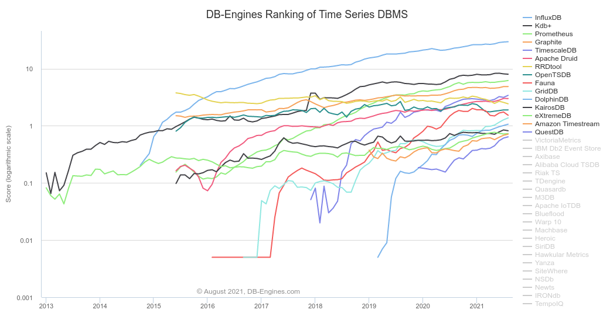
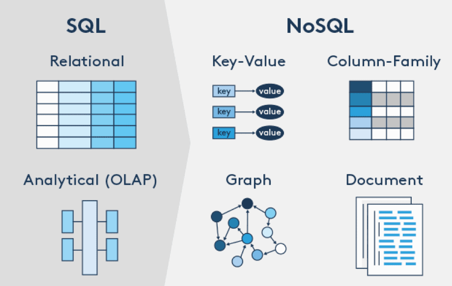
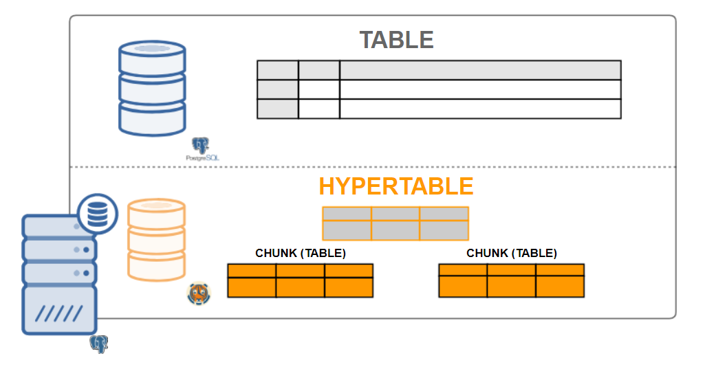
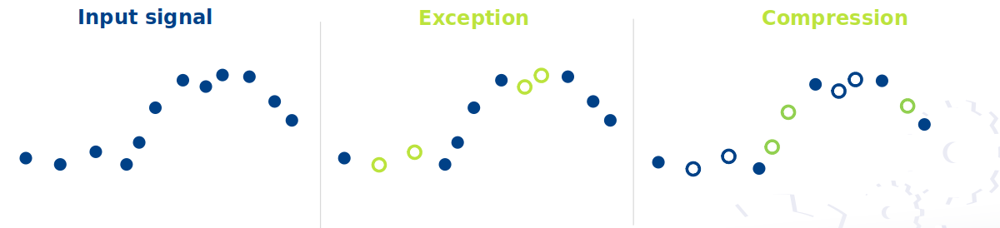
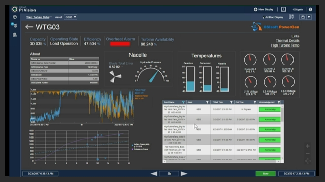

Timeseries db
By ...
- jan.bols@axians.com
- christofe.lintermans@actemium.com
- damien.cantinieaux@actemium.com
What is time-series data?
data that collectively represents how a system, process, or behavior changes over time.
Characterstics
- Time-centric
- Append only
- Recent
Time series are everywhere
Examples
SQL <=> NoSQL
SQL <=> NoSQL

- ACID
- Schema
- Distributed
Wide Data model
1. {name: cpu_1m_avg, free_mem, temperature, device_id: abc123, location_id: 335, dev_type: field}
2. {name: cpu_1m_avg, free_mem, temperature, device_id: def456, location_id: 335, dev_type: roof}
3. {name: cpu_1m_avg, free_mem, temperature, device_id: ghi789, location_id: 77, dev_type: roof}
Narrow Data model
1. {name: cpu_1m_avg, device_id: abc123, location_id: 335, dev_type: field}
2. {name: cpu_1m_avg, device_id: def456, location_id: 335, dev_type: roof}
3. {name: cpu_1m_avg, device_id: ghi789, location_id: 77, dev_type: roof}
4. {name: free_mem, device_id: abc123, location_id: 335, dev_type: field}
5. {name: free_mem, device_id: def456, location_id: 335, dev_type: roof}
6. {name: free_mem, device_id: ghi789, location_id: 77, dev_type: roof}
7. {name: temperature, device_id: abc123, location_id: 335, dev_type: field}
8. {name: temperature, device_id: def456, location_id: 335, dev_type: roof}
9. {name: temperature, device_id: ghi789, location_id: 77, dev_type: roof}
TimescaleDB 
- Postgres Extension
- Hypertables
Hypertables & Chunks
Hypertables & Chunks
- LRU chunk in memory
- Local indexes per chunk
Hypertables & Chunks
CREATE TABLE conditions (
time TIMESTAMPTZ NOT NULL,
location TEXT NOT NULL,
temperature DOUBLE PRECISION NULL
);
SELECT create_hypertable('conditions', 'time');
Data retention
CREATE TABLE conditions(
time TIMESTAMPTZ NOT NULL,
device INTEGER,
temperature FLOAT
);
SELECT * FROM create_hypertable('conditions', 'time',
chunk_time_interval => INTERVAL '1 day');
SELECT drop_chunks('conditions', INTERVAL '24 hours');
SELECT add_retention_policy('conditions', INTERVAL '6 months');
Age based compression
| time | device_id | cpu | energy_consumption |
|---|---|---|---|
| 12:00:02 | 1 | 88.2 | 0.8 |
| 12:00:02 | 2 | 300.5 | 0.9 |
| 12:00:01 | 1 | 88.6 | 0.85 |
| 12:00:01 | 2 | 299.1 | 0.95 |
||
\/
| time | device_id | cpu | energy_consumption |
|---|---|---|---|
| [12:00:02, 12:00:02, 12:00:01, 12:00:1] | [1, 2, 1, 2] | [88.2, 300.5, 88.6, 299.1] | [0.8, 0.9, 0.85, 0.95] |
ALTER TABLE example SET (
timescaledb.compress,
timescaledb.compress_segmentby = 'device_id'
);
SELECT add_compression_policy('example', INTERVAL '7 days');
Continuous aggregates
CREATE TABLE conditions (
time TIMESTAMPTZ NOT NULL,
device INTEGER NOT NULL,
temperature FLOAT NOT NULL,
PRIMARY KEY(time, device)
);
SELECT * FROM create_hypertable('conditions', 'time', 'device', 3);
INSERT INTO conditions
SELECT time, (random()*30)::int, random()*80 - 40
FROM generate_series(TIMESTAMP '2020-01-01 00:00:00',
TIMESTAMP '2020-06-01 00:00:00',
INTERVAL '10 min') AS time;
CREATE MATERIALIZED VIEW conditions_summary_hourly
WITH (timescaledb.continuous) AS
SELECT device,
time_bucket(INTERVAL '1 hour', time) AS bucket,
AVG(temperature),
MAX(temperature),
MIN(temperature)
FROM conditions
GROUP BY device, bucket;
SELECT add_continuous_aggregate_policy('conditions_summary_hourly',
start_offset => INTERVAL '1 month',
end_offset => INTERVAL '1 h',
schedule_interval => INTERVAL '1 h');
SELECT bucket, avg
FROM conditions_summary_hourly
WHERE device = 1 AND bucket BETWEEN '2020-01-01' AND '2020-03-31'
ORDER BY bucket;
Time series DB <=> Historian
OSISoft Pi
- Mixed model: TSDB (tags) + MSSQL (assets)
- TSDB: flat files per time period
- Connectors (buffering, 350+ protocols)
OSISoft Pi: Compression
- Exception filters (deadband)
- Compression

OSISoft Pi: get data out
- Excel
- Ole DB, ODBC, JDBC
- Rest API
- Cloud integrations
- Web app
OSISoft Pi: get data out
OSISoft Pi: Extraction
- Raw data
- resampled data (freq)
- Calculated data (min, max, avg, stdev, sum)
Wonderware
- Integrated SCADA, historian, MES, operational dashboards
- Properietory TSDB + MSSQL
Time series DB <=> Historian
- sharding of data over # servers
- getting data out is painful
- connectors
- sold together <-> timescaledb + grafana